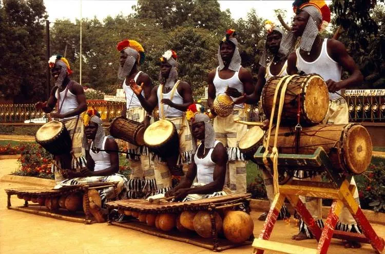

La musique à Bobo-Dioulasso est bien plus qu'une histoire de notes : c'est un art de vivre, une énergie qui traverse les générations, un sourire partagé au coin des rues. Ici, chaque soirée est promesse de découvertes et d’émotions, chaque rythme invite à la fête et à la rencontre.
Histoire de la musique à Bobo-Dioulasso
Bobo-Dioulasso, deuxième ville du Burkina Faso, est un véritable carrefour musical. Depuis des siècles, la musique rythme la vie quotidienne : cérémonies, mariages, veillées. Instruments traditionnels (balafon, djembé, tama) et chants ancestraux se mêlent aujourd'hui aux influences du jazz, du reggae ou du hip-hop. Cette ville est un creuset où se réinventent sans cesse les sons d’Afrique de l’Ouest.
Styles Musicaux Représentés
- Musique traditionnelle : Transmise de génération en génération, elle accompagne les rituels et les grands moments de la vie.
- Mandingue : Influencée par les peuples voisins du Mali et de la Côte d’Ivoire.
- Reggae africain : Porté par des artistes engagés comme Sams’K Le Jah.
- Afrobeat et Fusion : Rythmes africains et sonorités modernes se marient et créent la surprise.
- Rap et Hip-hop : Les jeunes de Bobo s’approprient ces styles pour porter leurs messages.
Lieux Emblématiques
La scène musicale de Bobo-Dioulasso vit dans ses rues, mais aussi dans des lieux phares :
- Maison de la Culture : Concerts, expositions, ateliers et rencontres.
- Institut Français : Un espace d’échanges et de découvertes artistiques.
- Le Figuier : Bar réputé pour ses soirées live et ses jams improvisées.
- Place Tiefo Amoro : Le rendez-vous des grands concerts en plein air.

Artistes Locaux et Groupes Célèbres
De nombreux artistes ont fait briller Bobo bien au-delà des frontières :
- Victor Démé : Une voix inoubliable de la musique mandingue.
- Idak Bassavé : Interprète charismatique à l’énergie communicative.
- Baba Commandant : L’afrobeat à la sauce burkinabè.
- Faso Kombat : Un groupe mêlant rap, engagement et sonorités africaines.
Événements Musicaux Majeurs
- Festival International des Musiques Traditionnelles : Les racines musicales du pays à l’honneur.
- Jazz à Ouaga (Bobo) : Un festival apprécié pour son ambiance unique.
- Festival des Masques : Où la danse et la musique s’unissent dans la magie.
Informations Pratiques
Comment venir ? Bobo est accessible par avion, train ou bus depuis Ouagadougou. L’aéroport international accueille plusieurs vols par semaine.
Meilleure période : De novembre à février pour profiter des températures douces et des festivals.
Où dormir ? Hôtels, auberges et logements chez l’habitant vous attendent pour tous les budgets.
À goûter absolument : Riz gras, tô, brochettes et attiéké pour régaler vos papilles !
Envie d’histoire ? Le Musée Provincial du Houet vous attend : masques, outils anciens, objets rituels… Chaque salle vous fait voyager dans la mémoire vivante de la région. Un lieu précieux pour comprendre les racines de Bobo-Dioulasso.